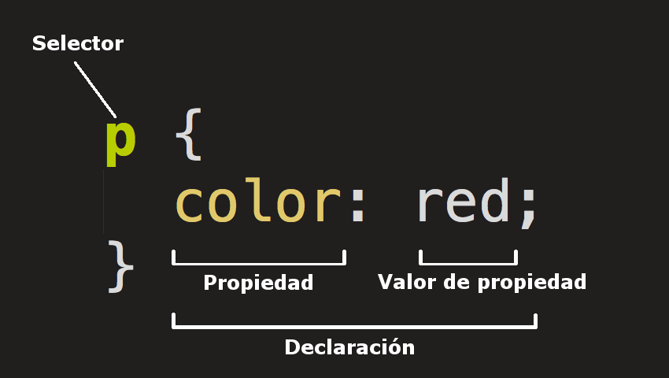

1.1- ¿Qué significa CSS?
Las siglas de ccs signifcan "Cascading style sheets"
1.2- ¿Para qué sirve el CSS? ¿Qué programa se utiliza para interpretar el CSS?
La css nos sirve para ponerle color a los textos y darle diseño a una columna de texto. Incluso tambien se puede utilizar para crear animaciones.Los programas que se utilizan son los navegadores, los cuales tienen que tener las mismas caracteristicas para poder ser ejecutado de la misma manera y visualizarlo de igual manera
1.3- ¿A qué se llama regla de CSS?
Las reglas se definen segun el usuario ,es decir, los usuarios especifican los grupos de estilo que se van a aplicar a elementos o grupos de elementos. La regla se abre con un selector, luegos se abren llaves, luego ira el valor
1.4- ¿Cuál es la anatomía de la regla de CSS? Agregar imagen explicativa y utilizando una lista descriptiva explicar sus elementos.

- selector
- Esta selecciona el elemento html el cual diseñamos.
- llaves
- Estas contiene mas declarioces, las cuales tomaran forma de propiedad y valores
- propiedad
- Las propiedades tienen diferentes valores, esto depende de que valor se especifique
1.5- ¿Qué es un selector en CSS?
Un selector en CSS es una parte de la regla de CSS, que describe que elementos en un documento la regla coincidira. Los elementos tendran el estilo especificado
1.6- Identificar y definir los selectores: de ID, de clases, universal, de etiquetas, descendente.
Selector id:
Estos buscan un elemento basado en el contenido del atributo
Selector clases:
El atributo class está definido como una lista de elementos separados por espacio, y uno de esos elementos debe coincidir exactamente con el nombre de clase dado en el selector.
Selector universal
El selector universal en CSS coincide con todos los elementos de cualquier tipo
Selectores de descendentes
Combina dos selectores tales que el selector combinado incluye sólo los elementos que coinciden con el
segundo selector para los que hay un elemento ancestro que coincide con el primer selector
1.7- Explicar brevemente utilizando una lista ordenada: ¿cómo funciona el CSS?
- El navegador carga el HTML
- Convierte el HTML en un DOM
- el navegador va a buscar la mayor parte de los recursos vinculados al documento HTML, como las imágenes y los videos incrustados
- El navegador analiza el CSS y ordena en diferentes «cubos» las diferentes reglas según el tipo de selector
- El árbol de renderización presenta la estructura en que los nodos deben aparecer después de aplicarle las reglas.
- En la pantalla se muestra el aspecto visual de la página (esta etapa se llama pintura)
1.8- ¿Cuáles son las tres formas para vincular CSS con HTML?
Se puede vincular mediante el head, en el cual pondriamos un "style" o sino o un "style" en las etiquetas individuales, o por tercera usariamos un link
1.9- Ingrese al sitio CSS Zen Garden http://www.csszengarden.com y analicemos el código HTML siguiendo los siguientes pasos
Si, son iguales, lo unico que cambia es el diseño de CSS, el cual lo hace diferentes
Si, en linea html puede tambien tener diferente diseño, ya que se cambia por individual o por mediante el head
| propiedad | descripcion | valores posibles |
|---|---|---|
| color | Define el color del texto. | RED, BLUE, GREEN |
| background-color | Define el color de fondo de un elemento | PINK, BROWN, BLACK |
| font-size | Define el tamaño de la fuente del texto | Small. medium, large |
| font-weight | Define el grosor de la fuente del texto (por ejemplo, si se trata de texto en negrita o normal). | bold, bolder,lighter |
| font-style | Define el estilo de la fuente del texto (por ejemplo, si es cursiva o normal). | oblique, initial, normal |
| font-family | Define el tipo de letra a utilizar para el texto. | Courier New', Courier, monospace |
| text-align | Define la alineación horizontal del texto (izquierda, centro o derecha) | center,left, end |
| text-decoration | Define la decoración del texto (por ejemplo, si está subrayado o tachado). | dashed, dotted, double |
| text-transform | Define la transformación del texto (por ejemplo, en mayúsculas o minúsculas). | none, capitalize, lowercase |
| letter-spacing | Define el espacio entre letras | 0cap, 0cm, 0ch |
| line-height | Define la altura de línea del texto. | 0cap, 0cm, 0ch |